引子
经常遇到需要对数字数组进行排序的情况，本文列举了常用排序算法的原理及实现；
排序算法性能
| 排序算法 | 平均时间复杂度 | 最好 | 最坏 | 空间复杂度 | 排序方式 | 稳定性 |
|---|---|---|---|---|---|---|
| 冒泡 | O(n²) | O(n) | O(n²) | O(1) | 占用常数内存 | 稳定 |
| 选择 | O(n²) | O(n²) | O(n²) | O(1) | 占用常数内存 | 不稳定 |
| 插入 | O(n²) | O(n) | O(n²) | O(1) | 占用常数内存 | 稳定 |
| 希尔 | O(n logn) | O(n log2n) | O(n log2n) | O(1) | 占用常数内存 | 不稳定 |
| 快速 | O(n logn) | O(n logn) | O(n²) | O(logn) | 占用常数内存 | 不稳定 |
| 归并 | O(n logn) | O(n logn) | O(n logn) | O(n) | 占用额外内存 | 稳定 |
| 堆排序 | O(n logn) | O(n logn) | O(n logn) | O(1) | 占用常数内存 | 不稳定 |
| 计数排序 | O(n + k) | O(n + k) | O(n + k) | o(k) | 占用额外内存 | 稳定 |
| 桶排序 | O(n + k) | O(n + k) | O(n²) | O(n + k) | 占用额外内存 | 稳定 |
| 基数排序 | O(n * k) | O(n * k) | O(n * k | O(n + k) | 占用额外内存 | 稳定 |
本文所有代码基于策略模式实现
排序接口 Sorter
package me.ilcb.algorithm;
import java.util.Comparator;
/**
* 排序器接口(策略模式: 将算法封装到具有共同接口的独立的类中使得它们可以相互替换)
*/
public interface Sorter {
/**
* 排序
*
* @param array 待排序的数组
*/
default <T extends Comparable<T>> void sort(T[] array){
}
/**
* 排序
*
* @param array 待排序的数组
* @param comp 比较两个对象的比较器
*/
default <T> void sort(T[] array, Comparator<T> comp) {
}
/**
* 排序
*
* @param array 待排序的数组
* @param start 开始索引
* @param end 开始索引
*/
default <T extends Comparable<T>> void sort(T[] array, int start, int end){
}
/**
* 基数排序
*
* @param array 待排序的数组
* @param radix 基数
*/
default <T extends Comparable<T>> void sort(T[] array, int radix) {
}
}
环境类 SortContext
package me.ilcb.algorithm;
import java.util.Comparator;
public class SortContext<T extends Comparable<T>> {
private Sorter sorter;
private T[] array;
private Comparator<T> comparator;
private int radix;
public SortContext(Sorter sorter) {
this.sorter = sorter;
}
public void setSorter(Sorter sorter) {
this.sorter = sorter;
}
public void setArray(T[] array) {
this.array = array;
}
public void setComparator(Comparator<T> comparator) {
this.comparator = comparator;
}
public void setRadix(int radix) {
this.radix = radix;
}
public void sort() {
if (sorter instanceof BubbleSorter) { //冒泡排序
sorter.sort(array);
} else if (sorter instanceof InsertSorter) { //插入排序
sorter.sort(array);
} else if (sorter instanceof ShellSorter) { //希尔排序
sorter.sort(array);
} else if (sorter instanceof MergeSorter) { //归并排序
sorter.sort(array, 0, array.length - 1);
} else if (sorter instanceof QuickSorter) { //快速排序
sorter.sort(array, 0, array.length - 1);
} else if (sorter instanceof SelectSorter) { //选择排序
sorter.sort(array);
} else if (sorter instanceof HeapSorter) { //堆排序
sorter.sort(array);
} else if (sorter instanceof RadixSorter) { //基数排序
sorter.sort(array, radix);
} else if (sorter instanceof CountSorter) { //计数排序
sorter.sort(array);
} else if (sorter instanceof BucketSorter) { //桶排序
sorter.sort(array);
}
}
}
冒泡排序
算法原理
1.将序列中所有元素两两比较，将最大的放在最后面；
2.将剩余序列中所有元素两两比较，将最大的放在最后面；
3.重复第二步，直到只剩下一个数；
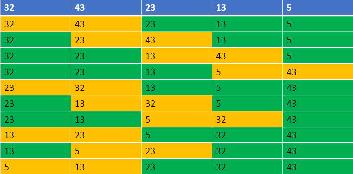
冒泡排序动图展示

代码
package me.ilcb.algorithm;
import java.util.Comparator;
import java.util.Random;
/**
* 冒泡排序
*/
public class BubbleSorter implements Sorter {
@Override
public <T extends Comparable<T>> void sort(T[] array) {
// 排序需进行length - 1轮
for (int i = 0, length = array.length; i < length - 1; ++i) {
//设定一个标记，若为false，则表示此次循环没有进行交换，也就是待排序列已经有序，排序已然完成
boolean swapped = false;
for (int j = 0; j < length - i - 1; ++j) {
if (array[j].compareTo(array[j + 1]) > 0) {
T temp = array[j];
array[j] = array[j + 1];
array[j + 1] = temp;
swapped = true;
}
}
if (!swapped) {
break;
}
}
}
@Override
public <T> void sort(T[] array, Comparator<T> comp) {
for (int i = 0, length = array.length; i < length; ++i) {
//设定一个标记，若为false，则表示此次循环没有进行交换，也就是待排序列已经有序，排序已然完成
boolean swapped = false;
for (int j = 0; j < length - i - 1; ++j) {
if (comp.compare(array[j], array[j + 1]) > 0) {
T temp = array[j];
array[j] = array[j + 1];
array[j + 1] = temp;
swapped = true;
}
}
if (!swapped) {
break;
}
}
}
}
选择排序
算法原理
1.遍历整个序列，将最小的数放在最前面；
2.遍历剩下的序列，将最小的数放在最前面；
3.重复第二步，直到只剩下一个数；
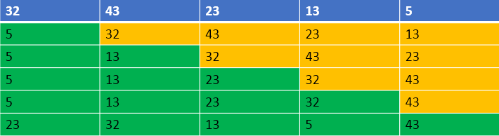
选择排序动图展示

代码
package me.ilcb.algorithm;
import java.util.Comparator;
public class SelectSorter implements Sorter {
@Override
public <T extends Comparable<T>> void sort(T[] array) {
int length = array.length;
for (int i = 0; i < length; ++i) {
T min = array[i];
int minIndex = i;
for (int j = i + 1; j < length; ++j) {
//选出最小的值和位置
if (array[j].compareTo(min) < 0) {
min = array[j];
minIndex = j;
}
}
array[minIndex] = array[i];
array[i] = min;
}
}
@Override
public <T> void sort(T[] array, Comparator<T> comp) {
int length = array.length;
for (int i = 0; i < length; ++i) {
T min = array[i];
int minIndex = i;
for (int j = i + 1; j < length; ++j) {
//选出最小的值和位置
if (comp.compare(array[j], min) < 0) {
min = array[j];
minIndex = j;
}
}
array[minIndex] = array[i];
array[i] = min;
}
}
}
插入排序
算法原理
1.将第一个数和第二个数排序，然后构成一个有序序列；
2.将第三个数插入进去，构成一个新的有序序列；
3.对第四个数、第五个数……直到最后一个数，重复第二步；
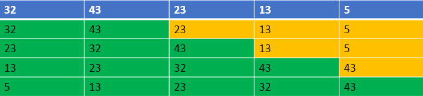
插入排序动图展示

代码
package me.ilcb.algorithm;
import java.util.Comparator;
public class InsertSorter implements Sorter {
public <T extends Comparable<T>> void sort(T[] array) {
int length = array.length;
int preIndex;
T current;
for (int i = 1; i < length; ++i) {
// 待插入的数
current = array[i];
// 待插入的位置
preIndex = i - 1;
while (preIndex >= 0 && current.compareTo(array[preIndex]) < 0) {
// 从后到前循环，将大于current的数向后移动一格
array[preIndex + 1] = array[preIndex];
--preIndex;
}
array[preIndex + 1] = current;
}
}
public <T> void sort(T[] array, Comparator<T> comp) {
int length = array.length;
int preIndex;
T current;
for (int i = 1; i < length; ++i) {
// 待插入的数
current = array[i];
// 待插入的位置
preIndex = i - 1;
while (preIndex >= 0 && comp.compare(current, array[preIndex]) < 0) {
// 从后到前循环，将大于current的数向后移动一格
array[preIndex + 1] = array[preIndex];
--preIndex;
}
array[preIndex + 1] = current;
}
}
}
希尔排序
算法原理
1.将数的个数设为 n，取奇数 k=n/2，将下标差值为 k 的数分为一组，构成有序序列；
2.再取 k=k/2 ，将下标差值为 k 的数分为一组，构成有序序列；
3.重复第二步，直到 k=1 执行简单插入排序；
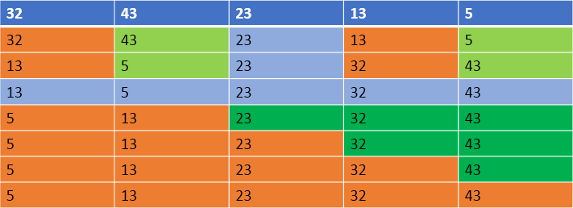
代码
package me.ilcb.algorithm;
import java.util.Comparator;
public class ShellSorter implements Sorter {
public <T extends Comparable<T>> void sort(T[] array) {
int length = array.length;
//分组数
int gap = length / 2;
while (gap > 0) {
//把距离为gap的元素编为一个组，扫描所有组
for (int i = gap; i < length; ++i) {
int j = i - gap;
//对距离为gap的元素组进行排序
while (j >= 0 && array[j + gap].compareTo(array[j]) < 0) {
T temp = array[j];
array[j] = array[j + gap];
array[j + gap] = temp;
j -= gap;
}
}
gap /= 2;
}
}
public <T> void sort(T[] array, Comparator<T> comp) {
int length = array.length;
//分组数
int gap = length / 2;
while (gap > 0) {
//把距离为gap的元素编为一个组，扫描所有组
for (int i = gap; i < length; ++i) {
int j = i - gap;
//对距离为gap的元素组进行排序
while (j >= 0 && comp.compare(array[j + gap], array[j]) < 0) {
T temp = array[j];
array[j] = array[j + gap];
array[j + gap] = temp;
j -= gap;
}
}
gap /= 2;
}
}
}
快速排序
算法原理
1.选择第一个数为 p，小于 p 的数放在左边，大于 p 的数放在右边；
2.递归的将 p 左边和右边的数都按照第一步进行，直到不能递归；
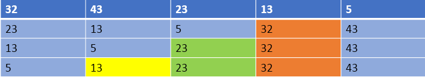
快速排序动图展示

代码
package me.ilcb.algorithm;
import java.util.Comparator;
public class QuickSorter implements Sorter {
public <T extends Comparable<T>> void sort(T[] array, int start, int end) {
quickSort(array, start, end);
}
public <T extends Comparable<T>> void quickSort(T[] array, int start, int end) {
if(start < end) {
int pivot = partition(array, start, end);
quickSort(array, start, pivot - 1);
quickSort(array, pivot + 1, end);
}
}
public <T extends Comparable<T>> int partition(T[] array, int start, int end) {
T pivot = array[start];
while (start < end) {
while(start < end && array[end].compareTo(pivot) >= 0) {
--end;
}
array[start] = array[end];
while (start < end && array[start].compareTo(pivot) <= 0) {
++start;
}
array[end] = array[start];
}
array[start] = pivot;
return start;
}
}
归并排序
算法原理
归并排序是建立在归并操作上的一种排序算法，采用分治法（Divide and Conquer）思想；
将已有序的子序列合并，得到完全有序的序列；即先使每个子序列有序，再使子序列段间有序。若将两个有序表合并成一个有序表，称为二路归并。
归并排序思想：
将待排序序列 array[0…n-1]看成是 n 个长度为 1 的有序序列，将相邻的有序表成对归并，得到 n/2 个长度为 2 的有序表；将这些有序序列再次归并，得到 n/4 个长度为 4 的有序序列；如此反复进行下去，最后得到一个长度为 n 的有序序列。
综上可知，归并排序其实要做两件事：
1.“分解”—将序列每次折半划分。
2.“合并”—将划分后的序列段两两合并后排序。
先来考虑第二步，如何合并？
在每次合并过程中，都是对两个有序的序列段进行合并，然后排序；
这两个有序序列段分别为 array1[low, mid]和 array2[mid+1, high]；
先将他们合并到一个局部的暂存数组tempArray 中，等合并完成后再将 tempArray 复制回 array 中。
每次从 array1、array2 中取出一个记录进行关键字的比较，将较小者放入 tempArray 中。最后将各段中余下的部分直接复制到 tempArray 中。
经过这样的过程，tempArray 已经是一个有序的序列，再将其复制回 array 中，一次合并排序就完成了。
接下来考虑第一步，如何拆分？
在某趟归并中，设各子表的长度为gap，则归并前 array[0…n-1]中共有n/gap个有序的子表：array[0…gap-1], array[gap…2*gap-1], … , array[(n/gap)*gap … n-1]。
调用 Merge将相邻的子表归并时，若子表个数为奇数，则最后一个子表无须和其他子表归并（即本趟处理轮空）：若子表个数为偶数，则要注意到最后一对子表中后一个子表区间的上限为 n-1。
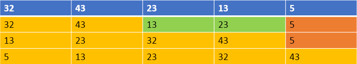
归并排序动图展示
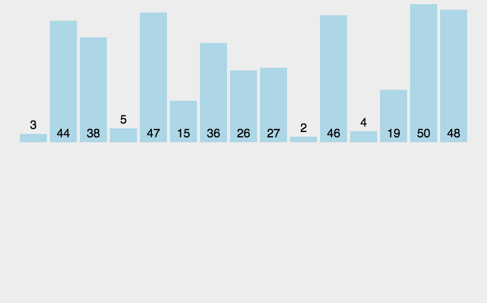
代码
package me.ilcb.algorithm;
import java.util.Comparator;
public class MergeSorter implements Sorter {
public <T extends Comparable<T>> void sort(T[] array) {
}
public <T> void sort(T[] array, Comparator<T> comp) {
}
public <T extends Comparable<T>> void sort(T[] array, int radix) {
}
//递归实现二路归并排序（分治法）
public <T extends Comparable<T>> void sort(T[] array, int start, int end) {
//二路归并排序，分为二路
int mid = (start + end) / 2;
if (start < end) {
// 递归过程
sort(array, start, mid);
sort(array, mid + 1, end);
//合并
merge(array, start, mid, end);
}
}
// 归并排序
public <T extends Comparable<T>> void merge(T[] array, int low, int mid, int high) {
int l = low; // 左数组第一个元素的索引
int h = mid + 1; // 右数组第1个元素
int t = 0; // 临时数组索引
Object[] temp = new Object[array.length]; // 存放临时序列
while (l <= mid && h <= high) { // 扫描第一段和第二段序列，直到有一个扫描结束
// 判断第一段和第二段取出的数哪个更小，将其存入合并序列，并继续向下扫描
if (array[l].compareTo(array[h]) <= 0) {
temp[t++] = array[l++];
} else {
temp[t++] = array[h++];
}
}
// 若第一段序列还没扫描完，将其全部复制到合并序列
while (l <= mid) {
temp[t++] = array[l++];
}
// 若第二段序列还没扫描完，将其全部复制到合并序列
while (h <= high) {
temp[t++] = array[h++];
}
// 将合并后的序列复制到原始序列中
for (int k = 0, i = low; i <= high; ++i, ++k) {
array[i] = (T) temp[k];
}
}
// 非递归实现归并
public <T extends Comparable<T>> void mergeSort(T[] array, int length) {
int size = 1; //size标记当前各个归并序列的high-low，从1，2，4，8，……，2*size
int low;
int mid;
int high;
while (size <= length - 1) {
//从第一个元素开始扫描，low代表第一个分割的序列的第一个元素
low = 0;
while (low + size <= length - 1) {
//mid代表第一个分割的序列的最后一个元素
mid = low + size - 1;
//high 代表第二个分割的序列的最后一个元素
high = mid + size;
// 如果第二个序列个数不足size个
if (high > length - 1) {
//调整 high 为最后一个元素的下标即可
high = length - 1;
}
// 调用归并方法，进行分割的序列分段排序
merge(array, low, mid, high);
//下一次归并时第一序列的第一个元素位置
low = high + 1;
}
size *= 2;
}
}
}
堆排序
算法原理
堆是一棵顺序存储的完全二叉树。
其中每个结点的关键字都不大于其孩子结点的关键字，这样的堆称为小根堆。
其中每个结点的关键字都不小于其孩子结点的关键字，这样的堆称为大根堆。……
举例来说，对于 n 个元素的序列{R0, R1, … , Rn}当且仅当满足下列关系之一时，称之为堆：
1.Ri <= R2i+1 且 Ri <= R2i+2 (小根堆)
2.Ri >= R2i+1 且 Ri >= R2i+2 (大根堆)
其中 i=1,2,…,n/2 向下取整
实现堆排序需要解决两个问题：
1.如何由一个无序序列建成一个堆？
2.如何在输出堆顶元素之后，调整剩余元素成为一个新的堆？
先考虑第二个问题，一般在输出堆顶元素之后，视为将这个元素排除，然后用表中最后一个元素填补它的位置，自上向下进行调整：首先将堆顶元素和它的左右子树的根结点进行比较，把最小的元素交换到堆顶；然后顺着被破坏的路径一路调整下去，直至叶子结点，就得到新的堆。这个自堆顶至叶子的调整过程为“筛选”，从无序序列建立堆的过程就是一个反复“筛选”的过程。
堆排序过程
1.首先，按堆的定义将数组 R[0..n]调整为堆（这个过程称为创建初始堆），交换 R[0]和 R[n]；
2.然后，将 R[0..n-1]调整为堆，交换 R[0]和 R[n-1]；
3.如此反复，直到交换了 R[0]和 R[1]为止。
可归纳为两个操作：
1.根据初始数组去构造初始堆（构建一个完全二叉树，保证所有的父结点都比它的孩子结点数值大）。
2.每次交换第一个和最后一个元素，输出最后一个元素（最大值），然后把剩下元素重新调整为大根堆。
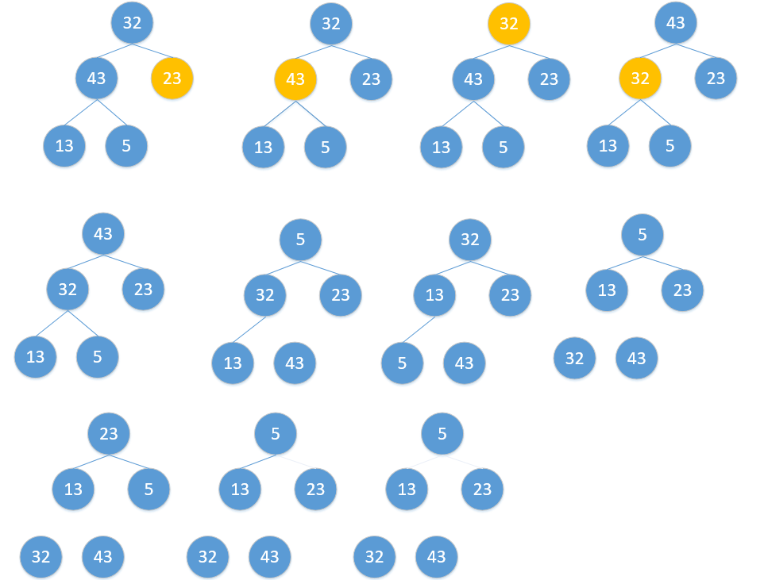
堆排序动图展示
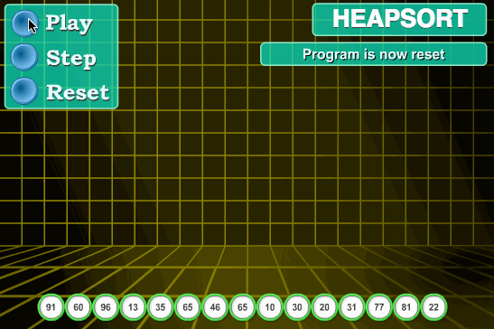
代码
package me.ilcb.algorithm;
import java.util.Comparator;
public class HeapSorter implements Sorter {
public <T extends Comparable<T>> void buildHeap(T[] array, int length) {
for (int i = length / 2; i >= 0; i--) {//从最后一个非叶子节点，才能构成adjustHeap操作的目标二叉树
adjustHeap(array, i, length);
}
}
//这里将i定义为完全二叉树的根
//将完全二叉树调整为大顶堆,前提是二叉树的根的子树已经为大顶堆。
public <T extends Comparable<T>> void adjustHeap(T[] array, int curIdx, int size) {
int lChild = 2 * curIdx + 1; //左孩子
int rChild = 2 * curIdx + 2; //右孩子
int k = curIdx; //临时变量
if (curIdx < size / 2) { //如果i是叶子节点就结束
if (lChild < size && array[k].compareTo(array[lChild]) < 0) {
k = lChild;
}
if (rChild < size && array[k].compareTo(array[rChild]) < 0) {
k = rChild;
}
if (k != curIdx) {
T temp = array[k];
array[k] = array[curIdx];
array[curIdx] = temp;
adjustHeap(array, k, size);
}
}
}
//将数组分为两部分，一部分为有序区，在数组末尾，另一部分为无序区。堆属于无序区
public <T extends Comparable<T>> void sort(T[] array) {
int length = array.length;
buildHeap(array, length);
for (int i = length - 1; i > 0; i--) {//i为无序区的长度，经过如下两步，长度递减
//堆顶即下标为0的元素
T temp = array[i];
array[i] = array[0];
array[0] = temp;
adjustHeap(array, 0, i); //2.将无顺区调整为大顶堆，即选择出最大的元素。
}
}
}
计数排序
算法原理
计数排序假设输入的元素都是0 到 k 之间的整数。计数排序的思想是对每一个输入元素 x，确定出小于 x 的元素个数，有了这一信息，就可以把 x 直接放在它在最终输出数组的位置上，例如，如果有 17 个元素小于 x，则 x 就是属于第 18 个输出位置。计数排序的核心在于将输入的数据值转化为键存储在额外开辟的数组空间中。
作为一种线性时间复杂度的排序，计数排序要求输入的数据必须是有确定范围的整数。
比较计数排序
针对排序列表中的每一个元素，算出列表中小于该元素的元素个数，并把结果记录在一张表中。这个“个数”指出了该元素在有序列表中的位置。加入一个列表 A 中有一个元素为 10，而小于 10 的元素个数有 5 个，那么 10 应该排在第六个位置上，也就是 A[5]（下标从 0 开始）。这个算法称为比较计数排序。
下面举个例子来说明，待排序数组为 array[6]={7, 9, 4, 2, 1, 8}：
1.建数组 countArray[6]用于计数，并初始化数组元素为 0:
| 索引 | 0 | 1 | 2 | 3 | 4 | 5 |
|---|---|---|---|---|---|---|
| array 数组 | 7 | 9 | 4 | 2 | 1 | 8 |
| countArray 数组 | 0 | 0 | 0 | 0 | 0 | 0 |
2.进行第 1 轮比较，i = 0, for (j = i + 1, j < array.length; ++j )，如果 array[i] (值为7) >= array[j]，countArray[i]++，如果 array[i] < array[j]，count[j]++
| 索引 | 0 | 1 | 2 | 3 | 4 | 5 |
|---|---|---|---|---|---|---|
| array 数组 | 7 |
9 | 4 | 2 | 1 | 8 |
| countArray 数组 | 3 | 1 | 0 | 0 | 0 | 1 |
3.进行第 2 轮比较，i = 1, for (j = i + 1, j < array.length; ++j )，如果 array[i] (值为9) >= array[j]，countArray[i]++，如果 array[i] < array[j]，count[j]++
| 索引 | 0 | 1 | 2 | 3 | 4 | 5 |
|---|---|---|---|---|---|---|
| array 数组 | 7 | 9 |
4 | 2 | 1 | 8 |
| countArray 数组 | 3 | 5 | 0 | 0 | 0 | 1 |
4.进行第 3 轮比较，i = 2, for (j = i + 1, j < array.length; ++j )，如果 array[i] (值为4) >= array[j]，countArray[i]++，如果 array[i] < array[j]，count[j]+
| 索引 | 0 | 1 | 2 | 3 | 4 | 5 |
|---|---|---|---|---|---|---|
| array 数组 | 7 | 9 | 4 |
2 | 1 | 8 |
| countArray 数组 | 3 | 5 | 2 | 0 | 0 | 2 |
5.进行第 4 轮比较，i = 3, for (j = i + 1, j < array.length; ++j )，如果 array[i] (值为2) >= array[j]，countArray[i]++，如果 array[i] < array[j]，count[j]+
| 索引 | 0 | 1 | 2 | 3 | 4 | 5 |
|---|---|---|---|---|---|---|
| array 数组 | 7 | 9 | 4 | 2 |
1 | 8 |
| countArray 数组 | 3 | 5 | 2 | 1 | 0 | 3 |
6.进行第 5 轮比较，i = 4, for (j = i + 1, j < array.length; ++j )，如果 array[i] (值为1) >= array[j]，countArray[i]++，如果 array[i] < array[j]，count[j]+
| 索引 | 0 | 1 | 2 | 3 | 4 | 5 |
|---|---|---|---|---|---|---|
| array 数组 | 7 | 9 | 4 | 2 | 1 |
8 |
| countArray 数组 | 3 | 5 | 2 | 1 | 0 | 4 |
7.最终状态
| 索引 | 0 | 1 | 2 | 3 | 4 | 5 |
|---|---|---|---|---|---|---|
| array 数组 | 7 | 9 | 4 | 2 | 1 | 8 |
| countArray 数组 | 3 | 5 | 2 | 1 | 0 | 4 |
8.用一个数组 tempArray[0……5]通过**tempArray[ countArray[i] ] = array[i]**存放数组 A 的值。
| 索引 | 0 | 1 | 2 | 3 | 4 | 5 |
|---|---|---|---|---|---|---|
| array 数组 | 7 | 9 | 4 | 2 | 1 | 8 |
| countArray 数组 | 3 | 5 | 2 | 1 | 0 | 4 |
| tempArray 数组 | 1 | 2 | 4 | 7 | 8 | 9 |
9.for(i = 0; i < array.length; ++i) array[i] = tempArray[i];排序完成
分布计数排序
排序步骤：
1.设被排序的数组为 array，tempArray 为临时数组。
2.首先通过一个数组 countArray[i]计算大小等于 i 的元素个数，此过程只需要一次循环遍历就可以；
3.在此基础上，计算小于或者等于 i 的元素个数，也是一重循环就完成。
4.逆序循环，从 length[array]到 1，将 A[i]放到第 countArray[array[i]]个位置上
原理是：countArray[array[i]]表示小于等于 array[i]的元素个数，正好是 array[i]排序后应该在的位置。而且从 length[array]到 1 逆序循环，可以保证相同元素间的相对顺序不变，这也是计数排序稳定性的体现。
下面举例说明：
数组如 array[10] = {3, 2, 4, 7, 5, 6, 9, 0, 6}，创建一个临时数组 countArray[k]这样的一个数组，k 表示数组 a 中的元素必须都在 0-k 之间，对于这个数组 k 为 9。通过数组 countArray 下标来记录我们需要排序的数组 array 中的元素，然后只要输出记录了这些的下标就好了。如果针对没有重复的序列，很容易可以得到这样的排好序的序列如：a[8]={0, 2, 3, 4, 5, 6, 7, 9}
| 下标 | 0 | 1 | 2 | 3 | 4 | 5 | 6 | 7 | 8 | 9 |
|---|---|---|---|---|---|---|---|---|---|---|
| countArray 数组 | 1 | 0 | 1 | 1 | 1 | 1 | 1 | 1 | 0 | 1 |
| 取下标排序后 | 0 | 2 | 3 | 4 | 5 | 6 | 7 | 9 |
针对有重复的情况，只需要记录有几个重复，在上表中的第二行就是用来解决这个问题的，我们可用来记录有几次重复，从而达到彻底的解决这排序的问题。如未排序数组：array[11] = {3, 2, 2, 4, 7, 5, 5, 6, 9, 6, 0, 6}
| 下标 | 0 | 1 | 2 | 3 | 4 | 5 | 6 | 7 | 8 | 9 |
|---|---|---|---|---|---|---|---|---|---|---|
| countArray 数组 | 1 | 0 | 2 | 1 | 1 | 2 | 2 | 1 | 0 | 1 |
| 取下标排序后 | 0 | 2 | 3 | 4 | 5 | 6 | 7 | 9 |
排序后得到数组为 array[11] = {0, 2, 2, 3, 4, 5, 5, 6, 6, 7, 9}
计数排序动图展示

代码
package me.ilcb.algorithm;
import java.util.Comparator;
public class CountSorter implements Sorter {
public <T extends Comparable<T>> void sort(T[] array) {
int length = array.length;
T maxValue = getMax(array);
//数组里所有的数字都小于range
int range = Integer.valueOf(maxValue.toString());
int[] countArray = new int[range + 1];
//统计每个数组元素array[i]在数组中出现的个数
for (int i = 0; i < length; ++i) {
int value = Integer.valueOf(array[i].toString());
++countArray[value];
}
//通过在countArray中记录计数和，countArray中存放的是小于等于i元素的数字个数
for (int i = 1; i < countArray.length; ++i) {
countArray[i] += countArray[i - 1];
}
Object[] tempArray = new Object[length];
// 把待排序数组中的元素放在临时数组中对应的位置上
for (int i = length - 1; i >= 0; --i) {
int value = Integer.valueOf(array[i].toString());
int position = countArray[value] - 1;
tempArray[position] = value;
--countArray[value];
}
for (int i = 0; i < length; ++i) {
array[i] = (T) tempArray[i];
}
}
public <T extends Comparable<T>> T getMax(T[] array) {
T max = array[0];
for (int i = 0; i < array.length; ++i) {
if (array[i].compareTo(max) > 0) {
max = array[i];
}
}
return max;
}
}
桶排序
算法原理
桶排序(Bucket Sort)的原理很简单，它是将数组分到有限数量的桶子里。
假设待排序的长度为 length 数组 array 中共有 length 个整数，并且已知数组 array 中数据的范围[0, MAX)，将这个序列划分成长度为 bucketsLen（可为(MAX - 0) / length + 1）个的子区间(桶)。然后基于某种映射函数，将待排序列的关键字 key 映射到第 i 个桶中(即桶数组 buckets 的下标 i)，那么该关键字 key 就作为 buckets[i]中的元素(每个桶 buckets[i]都是一组大小为 length / bucketsLen 的序列)。接着对每个桶 buckets[i]中的所有元素进行比较排序(可以使用快排)。然后依次枚举输出 buckets[0]…buckets[bucketLen]中的全部内容即是一个有序序列。
基本流程
1.建立一堆 buckets；
2.遍历原始数组，并将数据放入到各自的 buckets 当中；
3.对非空的 buckets 进行排序；
4.按照顺序遍历这些 buckets 并放回到原始数组中即可构成排序后的数组。
[关键字—桶]映射函数
bIndex = f(key):其中，bIndex 为桶数组 B 的下标（即第 bIndex 个桶），key 为待排序列的关键字。桶排序之所以能够高效，关键在于这个映射函数，它必须做到：如果关键字 k1 < k2，那么 f(k1)<=f(k2)。也就是说 buckets(i)中的最小数据都要小于 buckets(i+1)中最大数据。下面举个例子：
假如待排序列 array = {29, 25, 3, 49, 9, 37, 21, 43}，这些数据全部在 1—50 之间。因此我们定制 5 个桶，然后确定映射函数 f(key) = (key + 1) / 10。则第一个关键字 29 将定位到第 3 个桶中((29 + 1)/10=3)。依次将所有关键字全部堆入桶中，并在每个非空的桶中进行快速排序后得到如下图所示：
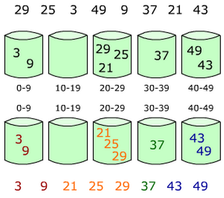
对上图只要顺序输出每个 buckets[i]中的数据就可以得到有序序列了。
代码
package me.ilcb.algorithm;
import java.util.ArrayList;
import java.util.Collections;
import java.util.Comparator;
import java.util.List;
public class BucketSorter implements Sorter {
public <T extends Comparable<T>> void sort(T[] array) {
int length = array.length;
T maxValue = getMax(array);
int max = Integer.valueOf(maxValue.toString());
List<List<T>> buckets = new ArrayList<>();
for (int i = 0; i < max + 1; ++i) {
List<T> list = new ArrayList<>();
buckets.add(list);
}
//将每个元素放入桶
for (int i = 0; i < array.length; ++i) {
T element = array[i];
int index = Integer.valueOf(element.toString());
buckets.get(index).add(element);
}
Object[] tempArray = new Object[length];
for (int i = 0, j = 0; i < buckets.size(); ++i) {
List<T> list = buckets.get(i);
Collections.sort(list);
for (int k = 0; k < list.size(); ++k) {
T element = list.get(k);
if (element != null) {
tempArray[j++] = element;
}
}
}
for (int i = 0; i < length; ++i) {
array[i] = (T) tempArray[i];
}
}
public <T extends Comparable<T>> T getMax(T[] array) {
T max = array[0];
for (int i = 1; i < array.length; ++i) {
if (array[i].compareTo(max) > 0) {
max = array[i];
}
}
return max;
}
}
基数排序
算法原理
基数排序(Radix Sort)是一种非比较型整数排序算法，它的基本思想是：将整数按位数切割成不同的数字，然后按每个位数分别比较；
具体做法是：将所有待比较数值统一为同样的数位长度，数位较短的数前面补零。然后，从最低位开始，依次进行一次排序。这样从最低位排序一直到最高位排序完成以后, 数列就变成一个有序序列；
基数排序按照对位数分组的顺序的不同，可以分为 LSD 基数排序和 MSD 基数排序。
下面举个例子，待排序数组 array = {53, 3, 542, 748, 14, 214, 154, 63, 616}，排序过程如下：
1.首先将所有待比较树脂统一为统一位数长度，接着从最低位开始，依次进行排序；
2.按照个位数进行排序；
3.按照十位数进行排序；
4.按照百位数进行排序；
排序后，数列就变成了一个有序序列:
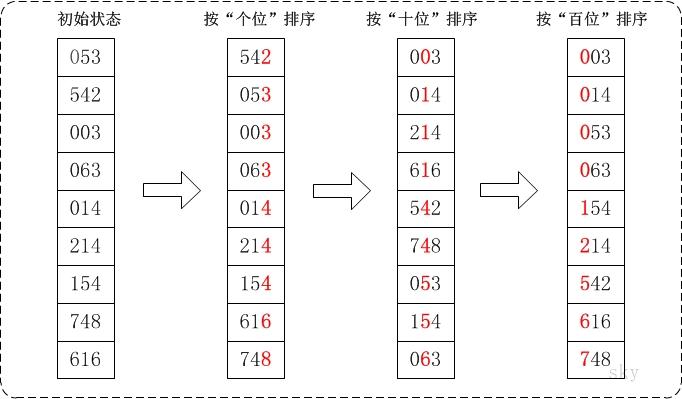
LSD（Least sgnificant digital）基数排序
按照从低位到高位的顺序进行分组排序。例如：1, 2, 3, 4, 5, 6, 7, 8, 9, 10 第一次分组后为 10, 1, 2, 3, 4, 5, 6, 7, 8, 9，适用于位数小的数列
MSD（Most sgnificant digital）基数排序
按照从高位到低位的顺序进行分组排序。例如：1, 2, 3, 4, 5, 6, 7, 8, 9, 10 第一次分组以后为 1, 10, 2, 3, 4, 5, 6, 7, 8, 9，如果位数多的话，使用 MSD 的效率比 LSD 好
基数排序动图展示

代码
package me.ilcb.algorithm;
import java.util.Arrays;
import java.util.Comparator;
/**
* 基数排序
**/
public class RadixSorter implements Sorter {
/**
* @param array 待排序数组
* @param radix 进制基数
*/
public <T extends Comparable<T>> void sort(T[] array, int radix) {
int length = array.length;
// 获取数组中最大的数字用于计算最大位数
T max = getMax(array);
int bits = 0; //数组中最大数的位数
int maxValue = Integer.valueOf(max.toString());
//获取最大位数
while (maxValue > 0) {
maxValue /= 10;
bits++;
}
Object[] buckets = new Object[length];
int[] count = new int[radix]; // 存放各个桶的数据统计个数
int rate = 1;
// 按照从低位到高位的顺序执行排序过程
for (int b = 0; b < bits; b++) {
//重置count数组，开始统计下一个关键字
Arrays.fill(count, 0);
//计算每个待排序数据的关键字
for (int i = 0; i < length; i++) {
int key = Integer.valueOf(array[i].toString());
int bucketIdx = (key / rate) % radix;
++count[bucketIdx];
}
// count[i]表示第i个桶的右边界索引
for (int i = 1; i < radix; ++i) {
count[i] = count[i] + count[i - 1];
}
// 将数据依次装入桶中, 开始从左向右，现在从右向左扫描，保证排序稳定性
for (int i = length - 1; i >= 0; --i) {
// 求出待排序元素第b位的数字，如34第2位是3
int key = Integer.valueOf(array[i].toString());
int bucketIdx = (key / rate) % radix;
buckets[count[bucketIdx] - 1] = array[i]; //插入到count[key] - 1位，因为数组下标从0开始
--count[bucketIdx];
}
rate *= radix; //前进一位
System.out.print("\n 第" + (b + 1) + "次：");
for (int i = 0; i < length; ++i) {
array[i] = (T) buckets[i];
}
print(array);
}
}
public <T extends Comparable<T>> T getMax(T[] array) {
T max = array[0];
for (int i = 1; i < array.length; ++i) {
if (array[i].compareTo(max) > 0) {
max = array[i];
}
}
return max;
}
//输出数组
public <T extends Comparable<T>> void print(T[] array) {
for (int i = 0; i < array.length; i++) {
System.out.print(array[i].toString() + "\t");
}
}
}